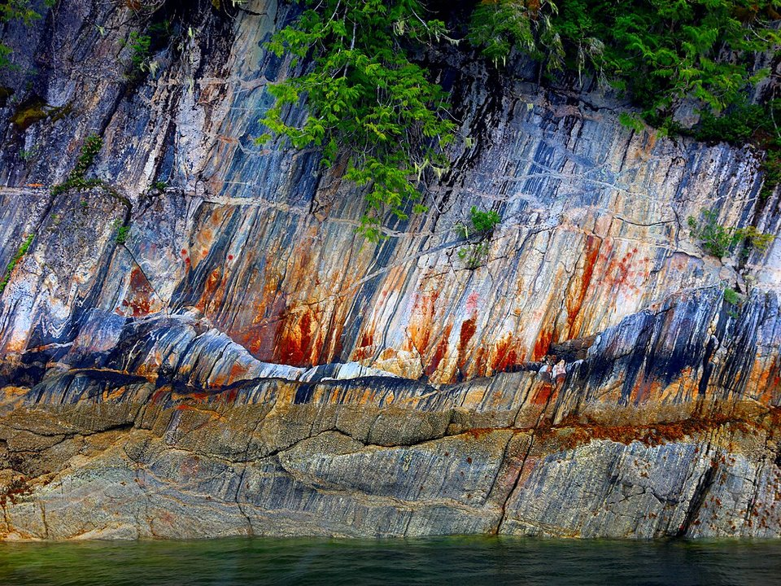

On the hill · Lodge
Cape Fox Lodge
A lodge above Creek Street reached by a funicular.
Official details for Cape Fox LodgeFloatplanes, totems and Misty Fjords.
Ketchikan is a rainforest town strung along Tongass Narrows, and floatplanes take off and land past its waterfront all day. Land at the airport on Gravina Island and ride the short ferry across, or splash down in the Narrows. Walk boardwalked Creek Street, see the totem poles at Saxman and Totem Bight, and fly into Misty Fjords National Monument, with its granite walls and waterfalls.

Time illustration: direct distance at 150 KTAS plus 15 minutes for departure and arrival, matching the discovery page. Use ForeFlight for your actual flight plan.
PAKT, Ketchikan International, is a non-towered state airport at 92 feet with a 7,500-foot runway on Gravina Island; a short ferry crosses to town. Floatplanes use the Tongass Narrows water lane and the Ketchikan Harbor seaplane base (5KE).
Ketchikan International Airport, Ketchikan, AK
Rain, low ceilings and heavy floatplane traffic in the Narrows; monitor CTAF carefully. Mountains rise steeply on both sides. No live fuel price is shown.
Southeast Alaska flying: frequent rain, low ceilings and fog in narrow channels, mountains rising straight from the water, and float traffic in the harbors. Carry survival gear and use the FAA weather cameras. From the lower 48 this is an expedition, not a weekend: the usual route is the Alaska Highway through Canada (customs, eAPIS and Canadian survival-equipment rules), roughly a week each way. Most visitors are Alaska-based pilots, or fly commercially and book local air taxis and flightseeing.
Ketchikan, AK · Promech Air 907-225-3845
Water lanes: E/W, 3,893 × 1,000 ft. The airport also lists a WNW/ESE water lane of 9,500 × 1,500 ft on Tongass Narrows.
Ketchikan is one of the busiest floatplane harbors in the country; expect commercial tour aircraft, cruise ships and boats.
Water landing rules, conditions and docking change; call the operator and check the chart supplement before you go.
Rates and availability need travel dates. Cruise days are crowded downtown.
A lodge above Creek Street reached by a funicular.
Official details for Cape Fox LodgeInns and lodges in Ketchikan.
Visit Ketchikan for More places to stayReserve weekend dinners.
Chowder and seafood in a historic downtown hotel.
Official details for Annabelle’s Famous Keg and Chowder HouseDinner with views over the Narrows.
Official details for Cape Fox LodgeBring rain gear; it’s a rainforest.
This prototype links to the local visitor site. It does not yet match events to your travel dates.
Flightseeing and fishing.
Taquan Air for Floatplane seasonSalmon in Ketchikan Creek.
Visit Ketchikan for Salmon runsAbout 150 inches of rain a year.
Visit Ketchikan for RainforestCheck the local calendar when choosing a weekend, and confirm dates and tickets with the organizer.
A sample Ketchikan weekend. Written for Alaska-based pilots and visitors already in Alaska. No bookings or availability confirmed.
Land at PAKT or 5KE mid-morning.
Misty Fjords by floatplane.
Creek Street, then back to the airport.
Land at PAKT or 5KE, subject to weather and your actual flight plan.
Creek Street.
Dinner at Annabelle’s.
Misty Fjords by floatplane.
Totem Bight.
Dinner at Cape Fox Lodge.
Saxman totem poles.
Allow time at the airport or dock.
Southeast weather changes fast; keep a margin.
Totem Bight.
Saxman totem poles.
Dinner at Annabelle's.
These details make the difference between an appealing list and a usable getaway.
Lodge, then the Misty Fjords flight.
About 590 nm along the Inside Passage.
Bring good rain gear.
May to September.
Picks and links reviewed by WingAway Weekends. Hours, prices, menus and availability change often, so confirm directly with each place before booking. Spotted something out of date, or have a favorite we missed? Email us at hello@wingawayweekends.com.
WingAway Weekends helps you discover the destination. Use ForeFlight and current official aviation information for route, performance, weather, NOTAMs and preflight decisions. Flight planning and PIC responsibility stay with the pilot.
One fly-in weekend, a Fly to Lunch pick and the newest guides, about once a month.
Free. Unsubscribe anytime.